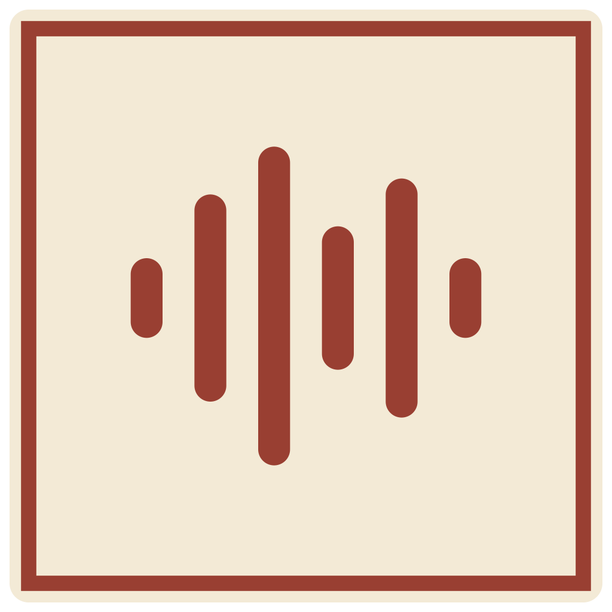

Слушай, а не записывай
Живая расшифровка микрофона и системного звука. Вернись к нужной реплике, пока разговор идёт дальше.

AskCue.Слушай собеседника, а не ищи нужные слова. AskCue собирает контекст встречи и помогает сформулировать то, что ты хочешь сказать.
Мы хотим запустить первую версию в этом месяце. Как думаешь, на чём лучше сфокусироваться?
Я бы начал с основного сценария и собрал обратную связь от первых пользователей.
Хорошо. А как поймём, что этот сценарий действительно работает?
«Давай проверим весь путь: от первого запуска до полезного результата. Посмотрим, где люди останавливаются, и спросим, что им помогло. Это даст нам основу для следующей итерации».
ЧУТЬ МЕНЬШЕ НАГРУЗКИ НА ТЕБЯ
Для рабочих встреч, обсуждения идей и подготовки к собеседованиям. В одном спокойном пространстве.
Живая расшифровка микрофона и системного звука. Вернись к нужной реплике, пока разговор идёт дальше.
Готовая реплика, уточняющий вопрос, краткие итоги или новые идеи. Выбирай действие под момент.
Добавь скриншот экрана или области. Модель с поддержкой изображений поможет разобраться в деталях.
OpenCode, облачные провайдеры, совместимые API или локальная модель через Ollama. Твой выбор, твои ключи.
История встреч и поиск по расшифровкам. Прошлые разговоры остаются под рукой в локальной базе.
Время до первого текста, длительность ответа и понятные ошибки. Меньше догадок, больше ясности.
ПОМОЩНИК ТВОЙ. МОДЕЛЬ ТОЖЕ.
Подключай привычный сервис или пробуй новый. Через OpenCode — с поиском моделей и потоковыми ответами прямо в AskCue.
Как устроена интеграцияДоступ к моделям и стоимость запросов определяет провайдер. Для распознавания речи настраивается отдельный сервис.
БЕЗ ЛИШНЕГО РИТУАЛА
AskCue берёт на себя контекст.
Ты остаёшься в разговоре.
Выбери AI-модель и сервис распознавания речи. Подключи свои API-ключи в настройках.
Выбери микрофон, включи системный звук и проверь первые строки расшифровки.
В нужный момент нажми кнопку действия или задай свой вопрос в чате.
Проект в начале пути. Пробуй, делись впечатлениями и помогай сделать помощника, которым хочется пользоваться.
Смотреть релизыГотовые сборки — по мере публикации. Пока их нет, можно запустить приложение из исходников.
# Node.js 22 · pnpm 11 · Rust
git clone https://github.com/Ainur-1/askcue.git
cd askcue
pnpm install --frozen-lockfile
pnpm run build:native
pnpm run app:devПАРА ВАЖНЫХ ВОПРОСОВ
Код AskCue открыт под MIT. Использование приложения не требует подписки AskCue. Облачные AI-сервисы и распознавание речи оплачиваются по условиям выбранного провайдера.
История встреч хранится локально. При выборе облачных сервисов аудио, текст или скриншоты передаются соответствующему провайдеру. API-ключи находятся в локальном plaintext-файле credentials.json, а не в системном хранилище ключей.
Ollama позволяет запускать языковую модель локально. Однако встроенные сервисы распознавания речи используют облако. Локальная AI-модель сама по себе не делает весь процесс офлайн.
Текущая среда разработки и проверки — Windows. Код для macOS включён, но сборки требуют проверки на целевом устройстве; стандартная конфигурация ориентирована на Apple Silicon. Поддержка Linux пока не подтверждена.
Расскажи об ошибке, предложи улучшение или отправь pull request. Инструкции для разработчиков есть в репозитории. Участвовать ↗